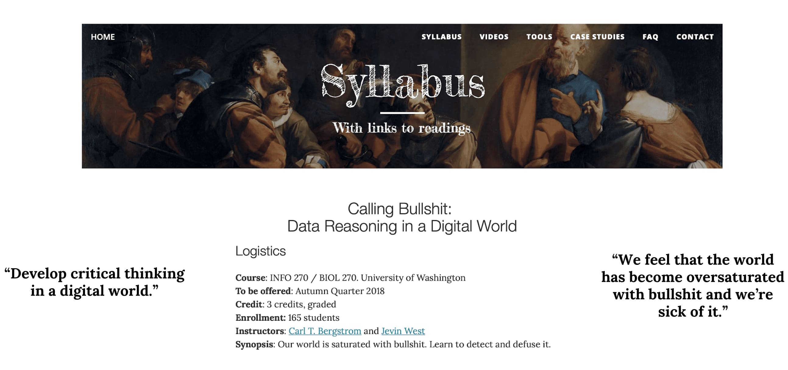

What's next ?
Cet article s'intéresse aux perspectives des réseaux antagonistes génératifs et de l'intelligence artificielle
“It’s not artificial intelligence I’m worried about, it’s human stupidity.”
Neil Jacobstein
Au vu du progrès technologique, que prévoir pour le futur ? L’intelligence artificielle a déjà des incidences sur le monde du travail. Pour autant le vrai visage de ce que beaucoup appellent une « révolution technologique » est encore inconnu. Donnera-t-elle naissance à un homme « remplacé », comme s'inquiétaient il y a déjà 300 ans, les luddites anglais qui détruisaient les métiers à tisser ? Un homme « dominé » qui ne sera plus maître de son destin, comme le suggère Blade Runner de Ridley Scott ? Un homme « augmenté », comme le promeuvent aujourd’hui les transhumanistes ? Ou un homme « réhumanisé » mettant en valeur son intuition et son imaginaire, comme ose espérer Bill Gates ? Le sociologue Yann Ferguson, explore ces quatre figures du travailleur à l’âge de l’IA à une période où les discours, prometteurs d'un côté et anxiogènes de l'autre, sur le sujet sont nombreux.

The Robot Uprising by Bryn G Jones
Cependant bien que l'IA est pour l’instant un ensemble de techniques qui s’améliorent peu à peu, on reste encore très éloigné de l’androïde conscient et immortel des films de science-fiction. D'après Jean-Gabriel Ganascia, auteur du livre « Le mythe de la Singularité » , le développement futur – vers 2030 pour Raymond Kurzweil – d’une intelligence artificielle omnisciente et dangereuse est « une supercherie ». « Le vrai problème ce n'est pas la Singularité dont on ne sait si elle adviendra, c'est l'engouement irrationnel pour ces thèses, les passions qu’elles suscitent, qui empêchent de réfléchir aux vraies questions posées par les technologies ». Ainsi, même si nous sommmes aujourd'hui loin d’une intelligence artificielle générale; moins pour certains, il s'avère important de développer une conscience numérique vis à vis de ces progrès technologiques, un esprit critique. Deux projets ont été développés en ce sens à l’Université de Washington.
Le premier projet cherche à développer chez les utilisateurs une prise de conscience vis à vis de la facilité de tromper les gens à partir d'identités digitales. En effet, si nous avons appris à nous méfier des noms d'utilisateur et des textes en général, avec les images c'est plus difficile. Pour un humain il est quasi impossible de synthétiser une image à partir de rien. Nous avons donc tendance à supposer qu'une image est bien celle de quelqu'un. Or, aujourd'hui, ce n'est plus forcément le cas. Avec ces nouveaux algorithmes génératifs les fausses identités digitales sont désormais de plus en plus complexes. Ici pas de recherche inversée possible à partir d'une photo, la personne n'existe pas. Il devient donc essentiel pour les "citoyens numériques" de pouvoir démêler le vrai du faux.
L'objectif à travers ce projet, c'est de comprendre que même si les ordinateurs sont bons, nos systèmes de traitement visuel sont encore meilleurs. En sachant ce qu'il faut rechercher - le contour du visage, les oreilles, les dents, le background, les contrefaçons sont identifiables facilement. Du moins pour l'instant. Le matériel et les logiciels utilisés pour produire ces fausses identitées continueront de s'améliorer et il s'avèrera nécessaire de rester vigilant afin de ne pas perdre la "course aux armements" entre falsification et détection.
Le second projet se veut encore plus ambitieux et vise à former les citoyens d'aujourd'hui et de demain dans un peu monde de plus en plus numérisé. Les politiciens, les universitaires, les annonceurs, tous s'adressent à un paysage médiatique qui met en avant les propos courts et percutants et délaisse parfois trop souvent la réflexion et l'analyse tout en utilisant parfois des données erronées pour étayer leurs affirmations. Trop d'informations que nous consommons, selon Jevin West et Carl Bergstrom, sont des "conneries". West, professeur adjoint à l'École "Information School", et Bergstrom, professeur de biologie, espèrent apprendre aux gens à réfléchir de façon critique à ce qu'on leur dit. À cette fin, ils ont proposé un nouveau cours, "Calling Bullshit in the Age of Big Data." "Nous avons l'impression que le monde est devenu sursaturé de conneries et nous en avons assez", ont-ils écrit sur le site Web du cours, qui comprend un syllabus, des lectures et des études de cas. "Aussi modeste soit-il, cette voie est notre tentative de riposte."

Ils ont l'intention de le faire en donnant aux élèves les compétences nécessaires pour réfléchir de façon critique aux données présentées comme preuves dans le domaine des sciences sociales et naturelles. Ils veulent que les élèves apprennent à reconnaître quand les affirmations ne sont pas étayées par des faits et qu'ils soient capables d'expliquer aux autres pourquoi ils ne devraient pas prendre certaines allégations pour argent comptant. Les données étant souvent manipulées pour étayer les arguments des gens, la capacité de distinguer le signal du bruit est essentielle selon M. West. "Dans mon domaine, nous passons beaucoup de temps à construire des outils logiciels, des outils de visualisation, des outils algorithmiques. Ainsi, de plus en plus de gens s'intéressent à ce genre de données", a déclaré M. West à la Chronique de l'enseignement supérieur. Pour lui même si de plus en plus de beaux graphiques sont produits, cela s'accompagne de nombreuses erreurs dans les arguments et dans la façon dont les données sont présentées.
Le développement de telles démarches s'avèrent donc nécessaire dans un monde en pleine transition. L'intelligence artificielle est en train d'impacter nos vies dans de nombreux domaines. Les changements seront nombreux et parfois inévitables, c'est pour cela que notre société se doit d'accompagner ces changements et d'y réfléchir au préalable afin de ne pas les subir. Il est donc essentiel que des sujets comme l'éthique de l'IA, l'open data, et bien d'autres encore, soient développés dans ce processus de réflexion.